临床路径可视化
将复杂的临床决策路径转化为直观流程图，帮助您快速理解诊疗流程
社区获得性肺炎诊疗流程图
流程图展示了从初始评估到出院后随访的完整社区获得性肺炎诊疗路径，包括严重程度评估、检查选择和治疗方案。

参考文献
- 中华医学会呼吸病学分会. 社区获得性肺炎诊断和治疗指南(2016年版). 中华结核和呼吸杂志, 2016, 39(4): 253-279.
- Metlay JP, Waterer GW, Long AC, et al. Diagnosis and Treatment of Adults with Community-acquired Pneumonia. An Official Clinical Practice Guideline of the American Thoracic Society and Infectious Diseases Society of America. Am J Respir Crit Care Med. 2019;200(7):e45-e67.
- National Institute for Health and Care Excellence. Pneumonia (community-acquired): antimicrobial prescribing. NICE guideline [NG138]. 2019.
- Prina E, Ranzani OT, Torres A. Community-acquired pneumonia. Lancet. 2015;386(9998):1097-1108.
- Mandell LA, Wunderink RG, Anzueto A, et al. Infectious Diseases Society of America/American Thoracic Society consensus guidelines on the management of community-acquired pneumonia in adults. Clin Infect Dis. 2007;44 Suppl 2:S27-S72.